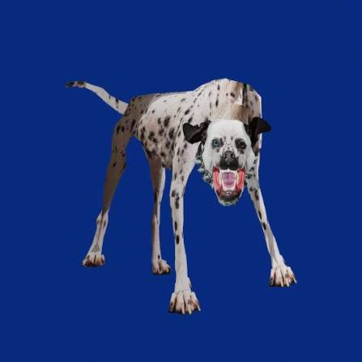

ALBUM 3
MOSCA
Una estética cruda y cinematográfica que mezcla electrónica, pop alternativo y rock con una energía oscura e impredecible.
2026 · 17 CANCIONES · 15 OCTUBRE
ESCUCHAR ALBUMTRACKLIST
- 1. SAMSA —
- 2. tuffluv ft. Nina —
- 3. Dientes de Fierro ft. Jean Dawson 3:40
- 4. Canonizado —
- 5. Santurce —
- 6. Lo Tuvimos Pero Ya No Está ft. Riosse —
- 7. ¿Qué Tan Cerca Es Cerca? —
- 8. Mil Problemas ft. Eslabón Armado —
- 9. Hombre de Bien 3:01
- 10. SANGRE! —
- 11. Estar Así Siempre ft. Julieta Venegas —
- 12. Peces Muertos —
- 13. No Basta Con Querernos Más —
- 14. Ghost In The Shell —
- 15. Circo ft. Kevin Kaarl —
- 16. atrapado y libre —
- 17. MARGOT —
Mi cancion favorita
Peces muertos
La canción que mas espero es peces muertos ya que la canto en un concierto hace meses, en ese momento me gusto mucho esa similitud a blamegame, tambien espero mucho otra que se llama samsa, aunque de esa solo tenemos el coro inicial. Peces muertos aun no sale oficialmente pero hay grabaciones subidas a soundcloud.
ESCUCHAR EN SOUNDCLOUD